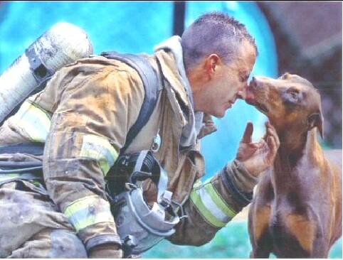

President's Message
- March 2005
I want to publicly thank the
members of SCWS for the tremendous support you offered upon the death of
my father. It is greatly appreciated by my family and myself.
On a happier note, four of the members of SCWS had the opportunity to go
to Anchorage for the start of the 2005 Iditarod. It was an incredible experience
and one I'd encourage others to consider if dogs, dog sledding, or the outdoors
are an interest. We even encountered a number of east coast SCA members
attending the event! I'll bring photos to our next meeting for those
who would like to take a look.
I hope our nominating committee is hard at work. We're going to have an
intense couple of years for 2005/6 and we need to have our club ready to
meet the commitments we've made. If you are approached, please consider
serving.
Cheri
President's
Message - April 2005
Is that a light at the
end of the tunnel or an oncoming train -- or both?
Recently, we've had a number of our members and friends with the Willamette
Valley club started picking up the pace in terms of the 2006 SCA National
Specialty. Late January, Liz and Van Swearingen "test drove" the host
hotel. Joy Ritter chaired the WVSF Eye and Microchip clinic in April
with WVSF donating the ENTIRE proceeds to SCA 2006. Darlene Rautio
has our SCA 2006 bank account set up and has deposited the loan from SCA.
She is also collecting goods for the rummage sale. Ann Brown, in consultation
with Jill Wilson, is heading out on a scouting trip in North Idaho
for hiking trails for the pack hike. Tina Grant, Barb Campbell and
Darlene Rautio are collecting toner and ink cartridges for recycling.
Barb Campbell has been talking with the Inland Northwest Malamute folks
about both assisting with the weight pull and loaning us their equipment
for the pulls at the National. Celinda and Christie are busily planning
the hospitality events. Judy Carrick is crafting gorgeous teal blue
Christmas ornaments complete with "working" Samoyeds for a fund raiser.
Liz & Van have requested proposals from various superintendents for their
fees and services. The list goes on and I'm sure there's other committee
work going on of which I am unaware. All in all, it's a pretty wonderful
light that's starting to shine!
There's lots more to be done, though (the oncoming train part...).
Many of us have been living the John Lennon's line of "Life is what
happens to you while youre busy making other plans", but have still been
"dogging" our commitment to the club. On behalf of all of us, I wish
to express our thanks to the following:
| Ann Brown |
Tina Grant |
Joe Ritter |
| Barb Campbell
|
Melissa Hopper |
Joy Ritter |
| Celinda Cheskawich |
Kim Leslie |
Christie Smith |
| Jim Cheskawich |
Kathy Manor |
Van Swearingen |
| Miranda Connor |
Ron Manor |
Liz Swearingen |
| Debbie Dassie |
Darlene Rautio |
Jill Wilson |
| Joee Dauer |
Terry Woods |
|
| The Willamette
Valley Samoyed Fanciers |
|
(If I missed someone,
please accept my apologies and let me know. I'll add you next time,
because there will be more of these!!)
Cheri
|
Whats It All About?
By: Ron Havener
|
I get lots of letters from people asking about dog shows and why they
matter in the overall scheme of things.
Let's take a closer look at that question. Dog shows, like most shows for
purebred livestock, started out as a chance for breeders to compare their
kennels and evaluate the progress of their breeding, nutritional and training
programs. We still have that chance today, in an age when shows have been
elevated into glamorous events of national stature. Has just about everybody
who loves dogs seen the recent Westminster Kennel Club show from Madison
Square Garden in New York City? Of course they have. Nobody who has ever
been to Crufts in England, the Salon du Cheval in Paris or the national
Arabian horse show in Scottsdale can walk away without being impressed by
how far the world of purebred animals has come. So, how does that fit with
other kinds of dog training, you ask? Other disciplines like Obedience,
Agility, Lure Coursing or Racing?
A recent conversation with Greyhound breeder/trainer (and former Quarter
Horse jockey) Kevin Gresham, from his farm in Kansas brought an answer to
that and it goes something like this: "Years ago," he says, "Back when I
was ridin', you'd have horses that did all kinds of crazy stuff. Some of
them horses could really get to carryin' on and a guy could get hurt Well,
there was this one trainer who did a lot of winning. And I mean a lot. I
always liked ridin' his horses 'cause they would just, you know, be real
calm and keep their mind on business. Well, what this guy said was, the
best racehorses are the ones who are trained the most."
Now, that's a very interesting statement and a rather broad one But, Kevin
has a broad base of experience. Besides having a few show dogs, he raises
and trains some of the most expensive, successful Greyhounds in the sport.
Kevin Gresham counts among his clients some of the most well known owners
in the game and he knows what he's talking about.
Hearing that statement is one thing. But, understanding it and putting it
into practice is a whole different matter. What it boils down to is this:
the dog with more experience is less likely to be surprised, distracted
or worried about anything that happens. What Kevin is talking about is cross -training.
And that can be the difference that makes a champion.
Some of the most successful people in other disciplines have come from the
show world. What secrets do they know? To find that out, you'd have to ask
the many Arabian horse trainers succeeding on the track. From there, you'd
have to ask people like Neal and Ginny Ehrhart of Keystone Driving Force,
who show horses and are also among the top winners in Harness racing After
Neal and Ginny, you'd have to go on and ask people like Jack and Mary Butler,
who were busy showing Siberian Huskies in New England about fifteen or so
years ago and today own one of the most respected Greyhound kennels in the
world. Or ask Jan Troxell who to this day still raises and shows German
Shepherds from her Greyhound racing farm in Oklahoma. The list goes on.
Maybe what these successful breeders and trainers discovered is that all
training disciplines -
no matter how different from each other they may seem to be
- go
hand in hand. Maybe they see the world of champions from a wider scope and
in a brighter light than their competitors do. Maybe it gives them an advantage.
We are in the show world because we believe in our dogs becoming the best
they can be. Whether we are fans, owners or somewhere in between, all of
us play a role in the making of champions and champions can be found in
many different arenas. Racehorses have proven themselves in dressage, driving,
hunter/jumper classes, western pleasure and halter. Obedience and Herding
winners have become conformation champions and retired racing Greyhounds
have gone on to win ribbons in the show ring as well.
In the dog sports of our choice, we see time-honored
rituals that touch a chord in all of us. We see dogs from across the country
competing to prove which is smartest, which is fastest, which more beautiful.
We see kennels competing against each other like Esmeralda and Blanche do
in my dog show novel "The Blue Ribbon" to prove which kennel is the best,
which trainer the wisest and which owner the most savvy.
In a society growing ever more soft, where schools and companies and towns
seem to be falling into a political correctness that makes our lives more
boring at every turn, we in dog sports have something to look forward to.
We live our dreams every day. We see their promise played out with every
sporting event we attend -
the promise that if you look straight ahead and give your all, you will
get from where you are right now to where you want to be. You will cross
the finish line, fast or slow. Dog sports are about the individual, not
about hiding behind a team that you're part of, but about you, alone, against
all odds. They don't teach you that kind of self-confidence
in high school, but the dog world does. When you are a winner in the dog
world, you will always know on some level
- no
matter how long you live or what you do
- that
you "made it."
There, for all to see, you stood before the crowd. You reached the winner's
circle and somewhere in the archives of your Breed, the world will always
know it.
A Good Dog Story
This photograph shows a red Doberman licking an exhausted fireman. He had
just saved her from a fire in her house rescuing her by carrying her out of
the house into her front yard, while he continued to fight the fire. She is
pregnant. The firefighter was afraid of her at first, because he had never
been around a Doberman before. When he finally got done putting the fire out,
he sat down to catch his breath and rest. A photographer from the Charlotte,
North Carolina newspaper, The Observer, noticed this red Doberman in the
distance looking at the fireman. He saw her walking straight toward the fireman
and wondered what she was going to do. As he raised his camera, she came up
to the tired man who had saved her life and the lives of her babies, and kissed
him, when the photographer snapped this photograph.

|
 March-April, 2005
March-April, 2005
January-February, 2005
October-December, 2004
June-August, 2004
May, 2004
April, 2004
March, 2004
January-February, 2004
December, 2003
November, 2003
October, 2003
August-September, 2003
July, 2003
May/June, 2003
April, 2003
March, 2003
February, 2003
January, 2003
November/December, 2002
October, 2002
September,
2002
August,
2002
July,
2002
June,
2002
May, 2002
April,
2002
February,
2002
January,
2002
December,
2001
November,
2001
October,
2001
September,
2001
July-August,
2001
June,
2001
May, 2001
April,
2001
March,
2001
February,
2001
January,
2001
December,
2000
Current Newsletter
SCWS Home Page

FastCounter
by bCentral
|
|